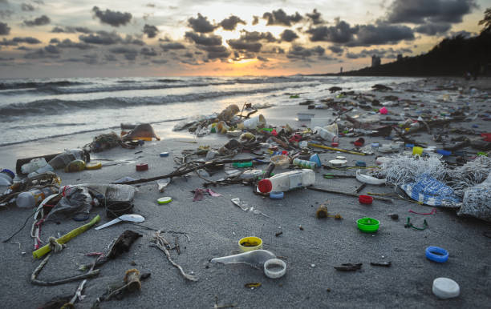

1. Air Pollution.
(i) Explanation.
Air pollution refers to the presence of harmful substances in the atmosphere that can negatively affect humans, other living beings, and the environment. These substances can be chemical, physical, or biological in nature, and they are often released into the air by industries and factories.
(ii) Solutions.
Drive your car less. Keep your car in good repair. Turn off your engine. Don't burn your garbage. Limit backyard fires in the city. Plant and care for trees. Switch to electric or hand-powered lawn equipment. Use less energy
(iii) Preventions
To reduce vehicle emissions, promote public transport, carpooling, and electric vehicles. Transition to renewable energy sources, implement industrial regulations, enhance green spaces, promote energy efficiency, support clean air policies, and raise public awareness about air pollution.
2. Soil Pollution.
(i) Explanation.
Soil contamination, soil pollution, or land degradation is caused by xenobiotic chemicals, industrial activity, agricultural chemicals, or improper waste disposal, affecting the natural soil environment.
(ii) Solutions.
To reduce soil pollution, adopt organic farming practices, reduce chemical use, implement soil remediation techniques, implement proper waste management, regulate industrial practices, raise public awareness, restore degraded land, and monitor soil quality through regular testing and monitoring.
(iii) Preventions
Sustainable agricultural practices, proper waste disposal, reducing plastic use, water management, education, conserving natural resources, and regulating industrial waste are key to reducing soil pollution. These practices promote soil health, reduce pollution risks, conserve resources, and encourage cleaner technologies.
3. Water Pollution.

(i) Explanation.
Water pollution refers to the contamination of water bodies, which negatively affects their various uses. This pollution typically results from human activities. Water bodies include lakes, rivers, oceans, aquifers, reservoirs, and groundwater. Contaminants enter these water bodies, leading to pollution.
(ii) Solutions.
Waste water treatment Reduce plastic waste Water conservation Water-saving toilets Septic tanks Do not use toilets as garbage bins Rainwater Management Green Agriculture and Wetlands Denitrification Ozone Wastewater Treatment
(iii) Preventions
To protect water bodies, follow these guidelines: proper waste disposal, reduce plastic use, implement sustainable agricultural practices, maintain septic systems, protect natural waterways, promote efficient water use, and support legislation for water protection. Encourage local governments to monitor water quality and take action against pollution.
4. Plastic Pollution.
(i) Explanation.
Plastic pollution is the accumulation of plastic objects and particles in the Earth's environment, causing adverse effects on humans, wildlife, and their habitats due to human activities.
(ii) Solutions and Preventions.
To reduce single-use plastics, encourage reusable bags, increase recycling efforts, implement plastic bans or fees, participate in clean-up events, support research and innovation, raise awareness about plastic pollution, and practice responsible consumerism by choosing products with minimal plastic packaging and supporting sustainable businesses.